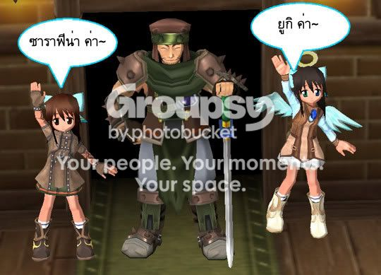

หน้า 1 จากทั้งหมด 2
[ถ่ายยามว่างในอดีต~]หนังน้ำเน่าปัญญา่อ่อน

โพสต์แล้ว:
อาทิตย์ 23 ธ.ค. 2007 9:26 pmโดย ECO
ณ เมืองๆหนึ่ง มีบ้านอยู่หลังหนึ่ง มีครอบครัวอยู่ครอบครัวหนึ่ง อยู่กับสามคน พ่อลูก (ลูก 2)

วันหนึ่งขณะที่สองพี่น้องกำลังนั่งอยู่ในบ้าน...


หลังจากนั้นเกิดจะอะไรขึ้น.... (คนแต่งก็ไม่รู้เหมือนกัน)
ปล.ทำตั้งนานแล้วจ้า ยังไม่มีเวลาทำต่อ คิดว่าอาจจะไม่ได้ทำต่อด้วยซ้ำ เอาเป็นว่าถ้าว่างคงจะมาทำต่อจ้า~
โพสต์แล้ว:
อังคาร 25 ธ.ค. 2007 12:09 amโดย ECO
แล้วจะได้ดูจนจบป่าวเนี่ย :?
พวกเธอจะได้พบแม่หรือไม่ O___o โปรดติดตาม ชาติหน้า :wink:
โพสต์แล้ว:
พุธ 26 ธ.ค. 2007 6:50 pmโดย ECO
นิยายรักน้ำเน้า ในEco จากการคาดเดา คงเดินทางไปหาแม่ แล้วก็พบพระเอก แล้วก็ตกหลุมรัก จากนั้น ก็มีนางร้ายเข้ามาขัดขวาง แล้วสักพัก ก็ชนะนางร้ายแล้วได้เจอกัน คุณแม่ รึเปล่าเอ่ย รอติดตามตอนต่อไปว่า ใครจาเปงแม่ อิอิ
โพสต์แล้ว:
พุธ 26 ธ.ค. 2007 9:17 pmโดย ECO
เอ้า!! เเต่งต่อไป เราชอบๆๆ งิงิ

โพสต์แล้ว:
จันทร์ 31 ธ.ค. 2007 3:28 amโดย ECO
โปรแกรมฉายภาคสอง ที่ดาวอังคาร
โพสต์แล้ว:
ศุกร์ 04 ม.ค. 2008 2:04 pmโดย ECO
อ า ว อี ก ๆ นู๋ จ า ดู ! ! ! ! ! ! ! ! :twisted: :twisted: :twisted: :twisted:
โพสต์แล้ว:
อาทิตย์ 06 ม.ค. 2008 8:45 amโดย ECO
ง่า ถ้าไม่ต่อมันจะค้างๆคาๆนะ จะดีหรือ รออยู่เอามาเด๋วนี้นะ แงแง~
โพสต์แล้ว:
อาทิตย์ 06 ม.ค. 2008 8:05 pmโดย ECO
TraPeT เขียน:นิยายรักน้ำเน้า ในEco จากการคาดเดา คงเดินทางไปหาแม่ แล้วก็พบพระเอก แล้วก็ตกหลุมรัก จากนั้น ก็มีนางร้ายเข้ามาขัดขวาง แล้วสักพัก ก็ชนะนางร้ายแล้วได้เจอกัน คุณแม่ รึเปล่าเอ่ย รอติดตามตอนต่อไปว่า ใครจาเปงแม่ อิอิ
เเล้วก็เเต่งงานกับพระเอกด้วยงิ รอติดตามต่อไปนะ
โพสต์แล้ว:
อาทิตย์ 06 ม.ค. 2008 9:36 pmโดย ECO
อืม ลิมไปได้ไงเนี่ย แต่งกะพระเอก><
รอติดตาม แต่อาจจะนานนนนนน~~~~~ ZZZ
เอ๋ มีนางเอก 2 คนนี่นา(พี่กะน้อง)
สงสัย ซีรี่ 2 คงต้องตบแย่งพระเอกกานแหง งิงิ
โพสต์แล้ว:
เสาร์ 12 ม.ค. 2008 9:58 pmโดย ECO
TraPeT เขียน:อืม ลิมไปได้ไงเนี่ย แต่งกะพระเอก><
รอติดตาม แต่อาจจะนานนนนนน~~~~~ ZZZ
เอ๋ มีนางเอก 2 คนนี่นา(พี่กะน้อง)
สงสัย ซีรี่ 2 คงต้องตบแย่งพระเอกกานแหง งิงิ
อาจจะ มีนางเอก 2 คน พระเอก 2 คนก็ได้นะ :oops:
หรือไม่งั้นก็พี่น้องเเตกเเยก เเย่งพระเอกงิงิ(เเหวกเเนวดีนะเนี่ยไอบทพี่น้องเเตกเเยกเอิ้กๆ :lol: )
โพสต์แล้ว:
เสาร์ 12 ม.ค. 2008 10:12 pmโดย ECO
หลังจากนั้นเกิดจะอะไรขึ้น.... (คนแต่งก็ไม่รู้เหมือนกัน)
คิดได้ไงครับ เห๊อะๆๆ
โพสต์แล้ว:
เสาร์ 12 ม.ค. 2008 10:58 pmโดย ECO
ก็ออกผจญภัยตามหาแม่สิไปที่เกาะไทนี่ไปหา Tita อะง่ายดี ^^
โพสต์แล้ว:
เสาร์ 12 ม.ค. 2008 11:06 pmโดย ECO
ตามหลักนิยายน้ำเน่า(ในอุดมคติของหนู)
1. นางเอกมาหลงรักกับพระเอกเเล้วทั้งสอง ก็รักกัน มี ไอตัวร้าย มาขัดขวางการรักของทั้งคู่ พระเอกเอาตัวบังเพื่อให้นางเอก ไม่โดนยิง พระเอกอาการหนักใกล้ตาย พอชีพจรพระเอกตกต่ำลง นางเอกน้ำตาหลลงบนหน้า ชองพระเอก พระเอกฟื้น มาเเต่งงานกัน.
2.มีสองพี่น้องคู่หนึ่ง ออกตามหาพ่อ/เเม่ ไปเจอพระเอก 2 ตัว เอ้ย 2 คนสิ- - รักกันมีตัวร้ายมาขัดขวาง พอเอาชนะตัวร้ายได้ ก็เเต่งงานกัน Happy Ending
น้ำในเกกว้ามันขุ่นๆ ขุ่น น้ำในเเก้วมัน ขุ่นๆ ขุ่น
โพสต์แล้ว:
อาทิตย์ 13 ม.ค. 2008 3:59 pmโดย ECO
แม้ว่าเรื่องจาเปงอย่างไร แต่อยากให้เจ้สของกระทู้รู้ว่า
คุณยังมีกระทู้นี้อยู่นะ รีบมาทำหน่อย อิอิ ถ้าไม่ทำ บอกนี้อาจจะถูกผู้ชม แต่งเสียเอง อิอิ
ปล.ยังไม่ต้องมาก็ได้ถ้ายังไม่ว่างนะ ^^
โพสต์แล้ว:
พุธ 16 ม.ค. 2008 9:43 pmโดย ECO
ติดตามชมตอนต่อปาย ~
ชะแว๊บบบบ ~
●•❤•●●•❤•●●•❤•●●•❤•●